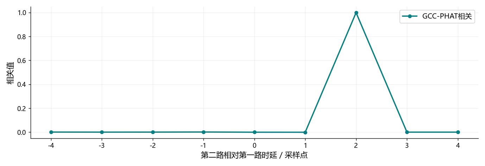

看图理解 · 跟着推演 · 对照真实结果
第10课 · 两只麦克风怎样听出时间差
从两点延迟的实际相关峰出发，串起方向估计、延迟求和、MVDR和MUSIC。
点播放开始；点右侧小节可跳到不懂的部分。进度保存在当前浏览器。
先看视频，再动手
不必先读完正文。跟着视频暂停预测，看到运行图时解释横轴、纵轴和曲线，再做下面的自测。完整图文保留作查阅；视频讲清本课核心算例，不把看完等同于掌握全部专题。
先修：采样、复数频谱、内积与基本滤波
- 约定时延正负与角度坐标
- 运行两麦时延估计
- 解释阵列方法的假设和边界
跟着运行：注释代码、实际输出与结果图
下面代码在生成本站时实际执行。这里只是教学小实验，不是完整模型训练或业务设备测评。
import numpy as np
rng = np.random.default_rng(10)
earlier = rng.normal(size=2048)
# 第二路晚两点，用补零避免环绕到开头
later = np.r_[np.zeros(2), earlier[:-2]]
N = 4096 # 足够长的FFT用于避免相关混叠
cross = np.fft.rfft(later, N)*np.conj(np.fft.rfft(earlier, N))
cross /= np.maximum(abs(cross), 1e-12) # PHAT只保留相位关系
corr = np.fft.irfft(cross, N)
lags = np.arange(-4, 5)
values = corr[lags % N] # 负时延在FFT结果尾部
delay = int(lags[np.argmax(values)])
angle = np.degrees(np.arcsin(delay*343/(16000*0.08)))
print('第二路时延/点:', delay)
print('法线角度/度:', round(angle, 3))
print('最大时差/点:', round(0.08/343*16000, 3))
本次实际输出
第二路时延/点: 2 法线角度/度: 32.408 最大时差/点: 3.732

闭卷自测：第二路晚2点，交换GCC-PHAT的输入顺序后，应得到什么时延？
应得到−2点。角度符号也依赖对应的通道顺序和坐标约定，不能只改数值不改说明。
逐字讲稿 · 可定位回看
把两只麦克风相隔八厘米放在桌面上。声音从斜侧方来，通常先到一只，再到另一只。机器可以利用这点时间差，但前提是两个通道同步，不能把设备缓存差误当成传播差。
今天把第二路到达时间减第一路作为时差。第二路更晚就是正数。角度从阵列法线方向量起，正前方为零度；正角度选在让第二路更晚的一侧。先约定这些，公式才有确定意义。
两只麦克风不等于立刻知道完整三维位置。不同方向可能具有相同时间差，反射也可能比直达声更强。我们先解决一个可核验的两点延迟问题，再讨论更复杂的方法。
远场平面波近似下，时差等于麦克风间距乘角度正弦，再除以声速。间距是米，声速是米每秒，所以结果是秒；再乘采样率，才得到相差多少个采样。
当正弦绝对值最大为一，八厘米除以三百四十三，再乘一万六千，约为三点七三。若程序报告两百点，先怀疑同步或实现，而不是直接宣布声源来自某个特殊角度。
从阵列轴线量角时，公式会写成余弦，这不是另一个物理定律。面试里常见错误就是拿别人定义的角度代入自己的公式。图、符号、通道顺序必须一起说明。
想象把两条相同图案叠在透明纸上，其中一张向右移了两格。你左右滑动它，最能重合的位置就是延迟。互相关把这种逐位置比较写成乘积与求和。
如果信号只有一个稳定正弦，移动一个周期后又很相似，就会出现多个候选峰。宽带随机探针比较容易验证延迟，因此今天用它做单元测试，不把它叫作真实语音定位数据。
图上的峰值不是百分之多少的置信概率。它的数值受归一化、有限长度和窗口影响。先验证最大峰的位置与符号，再检查假峰和噪声条件，不要只展示一根很高的线。
频域里先用第二路频谱乘第一路频谱的复共轭，得到互谱。我们固定这个顺序，使第二路晚到时峰落在正时延。如果交换输入顺序，延迟符号也应该反过来。
PHAT 再除以互谱幅度，弱化某些强频带对结果的独占。可以把它理解成更重视跨频率的相位关系，而不是仅让能量最大的频带投票。很弱频点仍需数值保护。
归一化不是魔法。强混响、低信噪比、窄带输入或者通道不同步仍会导致错误峰。它适合先作为可解释基线，再与真实数据上的失败情况一起分析。
前五行先生成第一路，再在第二路前面补两个零，后面取第一路除最后两点以外的内容。这样第二路确实晚两点，而且两路长度一致。这里没有把结尾环绕到开头。
使用四千零九十六点 FFT，足够覆盖两条有限序列的线性相关长度。互谱归一化后反变换。负时延存放在结果尾部，所以代码用取模索引把负四到正四提取成直观顺序。
最后找到相关值最大的索引，转换成采样时延。角度换算只在结果符合物理范围时才有意义。本例真值为两点，反正弦输入合法，得到相对于我们定义的法线约三十二点四度。
先在横轴找到零，最大峰位于右侧加二。它说明第二路相对于第一路晚两个采样，与你构造输入的方式一致。旁边较小的数值来自有限长度和归一化，不要求全部严格等于零。
两点除以一万六千是零点一二五毫秒。再乘声速除以麦距，得到角度正弦约零点五三六，反正弦约三十二点四度。先得到时间，再利用几何转换，别把两步混成一个黑箱。
搜索范围放到正负四是整数格上的方便选择，但真实上限仍只有三点七三。若峰在四，不能偷偷把反正弦输入截成一再宣布九十度，应检查量化、同步、反射和估计误差。
当第二路晚两点，直接相加会把目标的不同位置混在一起，某些频率反而相消。延迟求和先让同一个目标采样对齐，再给两路相同权重。关键是对齐，不只是最后除以二。
若对齐后两路噪声独立且功率相同，平均使噪声功率减半，目标保持，因此理想信噪比改善约三分贝。若噪声也相干，或方向估错，这个简单收益就不一定成立。
离线可以把晚到的一路往前移并裁掉边界；实时不能读取未来，只能让早到的一路等一会儿。真实时差经常不是整数，还需要分数延迟或频域相位补偿，不能总靠四舍五入。
如果目标已对齐，而第二路噪声功率是第一路的四倍，平均并不聪明。MVDR 在目标响应保持一的约束下，选择让输出噪声功率最小的权重，用到噪声各通道怎样共同变化的信息。
在两路噪声不相关、功率一和四的例子里，权重是零点八和零点二。目标权重之和为一，噪声功率为零点六四加零点一六，等于零点八，比等权的一点二五更低。
一般情况下权重是复数，不一定都在零到一。实际应解线性方程并做稳定化，不盲目显式求逆。更难的是估准方向和噪声统计；把目标误算进噪声，也可能伤害目标。
同一个窄带声源在各麦克风上呈现特定相位模式。收集许多快拍形成协方差，再做特征分解，可以区分主要共同变化的方向和其余方向，也就是信号与噪声子空间。
在理想模型里，正确方向的导向向量接近与噪声子空间正交。扫描不同角度，投影能量越小，取倒数形成的方向谱越高。这解释了为什么噪声子空间反而能帮助找声源。
最简单版本要求声源数、几何和窄带模型适当，噪声近似空间白。强反射、少快拍和宽带语音都要额外处理。网格画得更密只代表搜索更细，不会凭空增加数据中的方向信息。
暂停回答：把两路输入交换，刚才加二点应该变成什么？答案是负二点。这个测试虽然简单，却能抓住大量通道顺序和共轭方向的错误，值得写成长期保留的自动测试。
接着把麦距改大，检查物理时差范围与空间混叠风险。常见全视场窄带设计希望阵距不超过半波长，但真实宽带处理还要考虑频带选择，不能只背一个距离阈值。
水声与空气都用相关、协方差和阵列思想，但声速、频率、距离和噪声模型需要重建。今天交付一张相关峰图、一条反号测试和一张参数表，先把能够核验的第一阶完成。
适用边界与参考正文
只运行宽带随机信号的两麦GCC-PHAT教学实验；MVDR与MUSIC为机制讲解，未声称本视频完成真实阵列定位或水声验证。
图、公式、代码结果均由本站制作；旁白是本地中文语音合成，不是教师真人录音，也不是 NotebookLM 生成。没有向 Google 上传项目材料。